Variational (Bayesian) GP-LVM model
This page describes examples of how to use the variational approximation to the Bayesian GP-LVM model. Two important extensions also included, is the Variational Gaussian Process Dynamical Systems (VGPDS) and the Manifold Relevance Determination (MRD) methods.
The VARGPLVM software can be downloaded here.
Release Information
Current release is 1.0.
The current release includes the Manifold Relevance Determination (MRD) method (shared variational GP-LVM) and various utilities for easier initialisation and demo configuration, as well as better documentation.
As well as downloading the VARGPLVM software you need to obtain the GPmat toolbox GPmat toolbox.
Version 0.2
This release includes dynamical models (VGPDS implementation).
Version 0.14
This release includes improved numerical stability on the gradient and bound computations which finds better solutions under the optimizer. Derived and implemented by Andreas Damianou and Michalis Titsias.
Version 0.1
This release is for the AISTATS 2010 submission.
Variational GP-LVM examples
Oil Data
The 'oil data' is commonly used as a bench mark for visualisation algorithms. For more details on the data see this page. In all of the following examples 50 inducing points were used.
Standard dataset
The scriptdemOilVargplvm1.m runs the Bayesian GP-LVM Model on this dataset, giving the results
shown on the left of the figure that follows. The visualization was achieved by keeping the most dominant
latent dimensions (2 and 3) which have the largest inverse lengthscale value. Dimension 2 is plotted on the
y-axis and 3 and on the x-axis. The script demOilVargplvm2.m is similar but there
are missing outputs from test points; the model attempts to reconstruct these missing outputs. The result is
shown on the right of the figure.

Left: Bayesian GP-LVM on the oil data without missing outputs. The phases of flow are shown as green circles, blue crosses and red plusses. Right: Similar but in this case 50% of the outputs are missing and the model attempts to reconstruct them.
100 points in the active set
The scriptdemOil100Vargplvm1.m runs the Bayesian GP-LVM Model on the Oil Data with only 100 points in the active set, giving the result on the figure below.
Bayesian GP-LVM on the oil data using 100 points in the active set.
Loop Closure in Robotics
In on-going work with Dieter Fox and Brian Ferris at the University of Washington we are interested in loop closure for robotic navigation, included as an example is a data set of a robot completing a loop while reading wireless access point signal strengths. The scriptdemRobotWirelessVargplvm1.m runs the Bayesian GP-LVM Model on this dataset in order to produce a neat track and close the loop, as can be seen on the figure shown below.

Use of the Bayesian GP-LVM Model to obtain loop closure in a robot navigation example.
Frey Faces Data
In this dataset, we try to exploit the ability of the model to reconstruct partially observed test data. Therefore, when the model is trained only half of the image pixels are assumed to be observed. After training on 1000 images, each partially observed test image was processed separately and the missing pixels were predicted as shown on the figures below. The code to obtain the following figures was based on thedemBrendanVargplvm3.m script.
 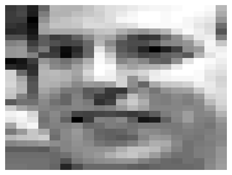
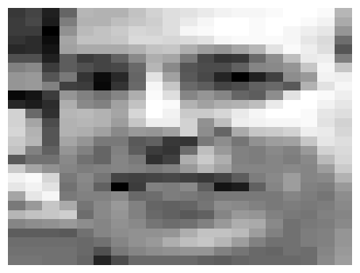 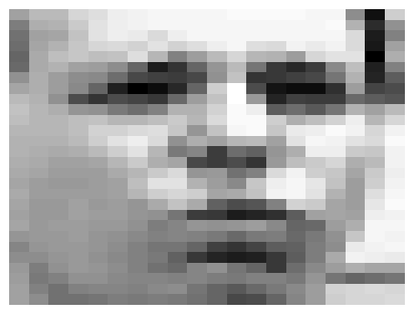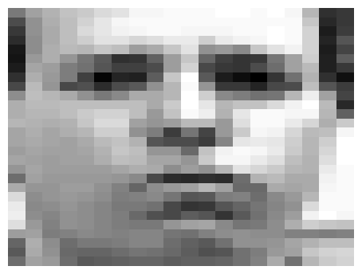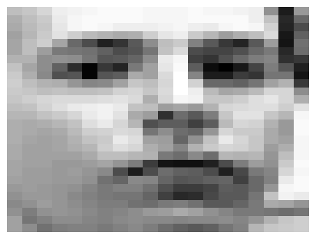
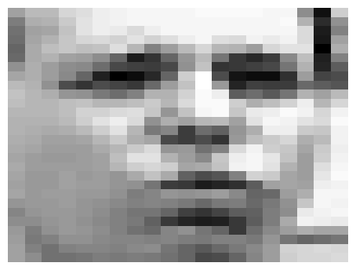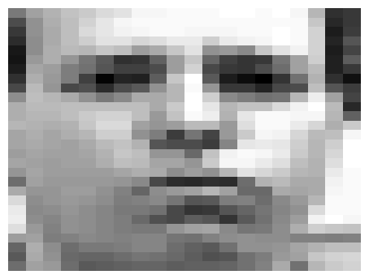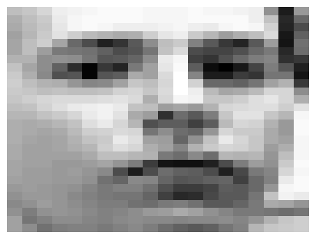 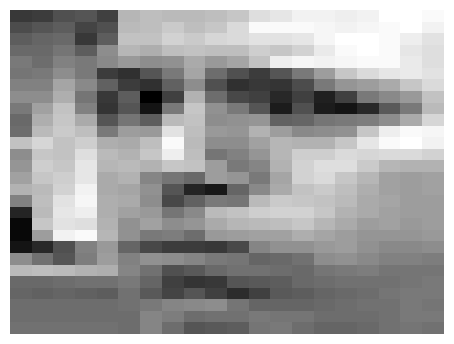
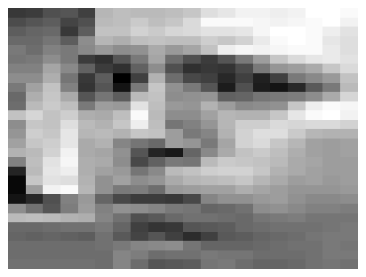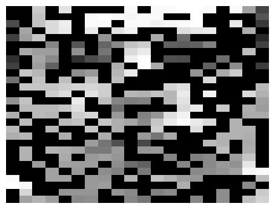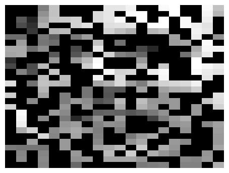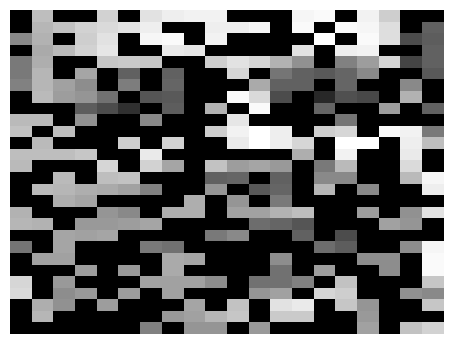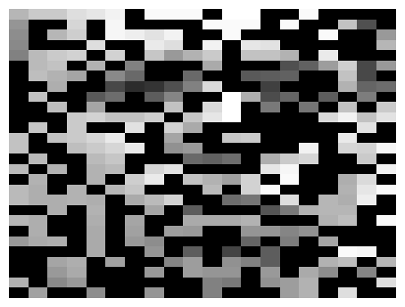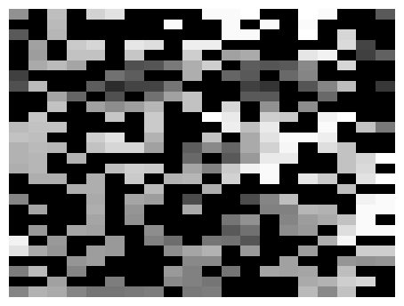 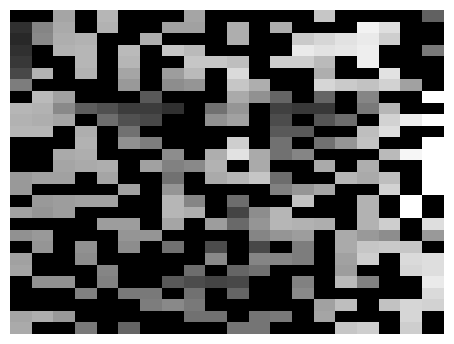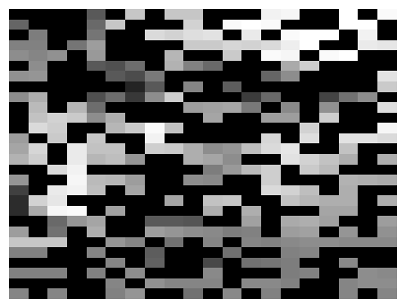
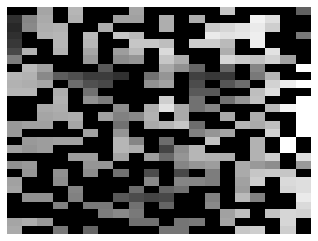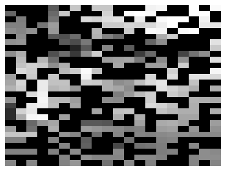
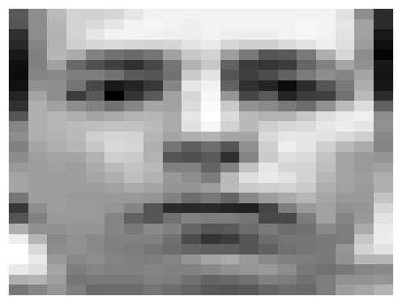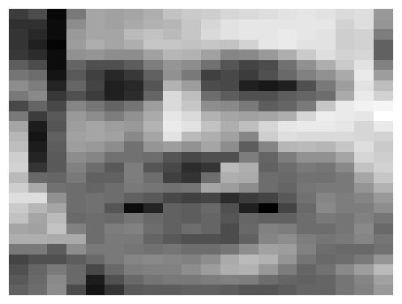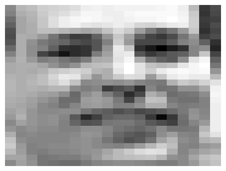 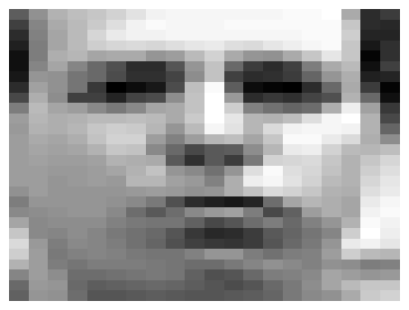
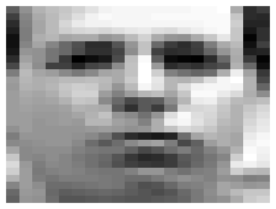 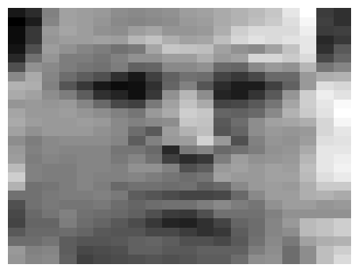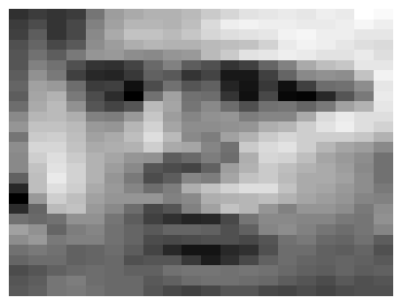
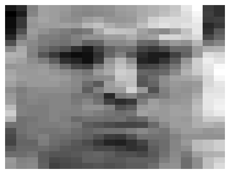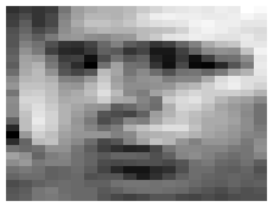
Examples of reconstruction of partially observed test images in Frey faces by applying the Bayesian GP-LVM. Each column corresponds to a test image. In every column, the top panel shows the true test image, the middle panel the partially observed image (where missing pixels are shown in black) and the bottom image is the reconstructed image.
Dynamical Systems Modelling
The Bayesian GPLVM model has been extended with dynamics (see here) in a fully Bayesian framework, where a temporal prior is placed on the latent space and the latent points are integrated out. This makes the model suitable for robust modelling of dynamical systems, such as motion capture data or video sequences. Given that the model is generative, the method can also be used to produce novel sequences. The scriptdemosDynamics.m reproduces the corresponding experiments. The first diagram below demonstrates the ability of the method to reconstruct partially observed frames taken from a video sequence. The second diagram shows an image which is generated without giving partial information, apart from a time interval for inter- or extrapolation. The video used for that experiment expressed strong periodicity, which allowed the model to be trained on 60 frames and then produce a novel video sequence for any given time interval (in the particular experiment for times 61 to 100). The complete videos generated for these experiments can be found in the next section.

Reconstructing a partially observed frame.

One of the frames that belong to a video sequence which is generated by the model.
Video samples and supplementary material
All of the videos presented here are in reduced resolution. The original videos (where the model was directly applied) were high-dimensional: 288 x 360 pixels for the "missa" video, 360 x 640 pixels for the "dog" video and 1280 x 720 (HD) for the "ocean" video.The videos and README files can be downloaded from the following links:
A few samples are embedded below.
Manifold Relevance Determination
This concerns the implementation of a Manifold Relevance Determination model, or
a 'shared variational GP-LVM' (svargplvm).
This model has been presented in the
Manifold Relevance Determination paper by A. Damianou, C. Ek, M. Titsias
and N. Lawrence, ICML 2012 (link).
Being an extension to the Bayesian GP-LVM, in the MRD the latent
space is marginalised out and the use of Automatic Relevance Determination
(ARD) covariance functions for the mapping from the latent to the observation
space allows for automatic dimensionality detection. However, in
contrast to the Bayesian GP-LVM, here a different Gaussian Process (GP)
mapping is used per output modality, each with a different covariance
function and, hence, different set of ARD hyperparameters.
Notation: latent space
 , output modalities 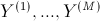.
, output modalities 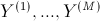.
See the file
svargplvm_README.txt for more information.
Examples
The demos are all packaged into a single tutorial demo:MRDtutorial.m which
goes through the following results and explains them.
Toy data without dynamical prior
For this toy data, we create two datasets, each having a private and a shared signal. The model automatically segments the signal as is shown in the figures below (optimised weights and discovered latent spaces).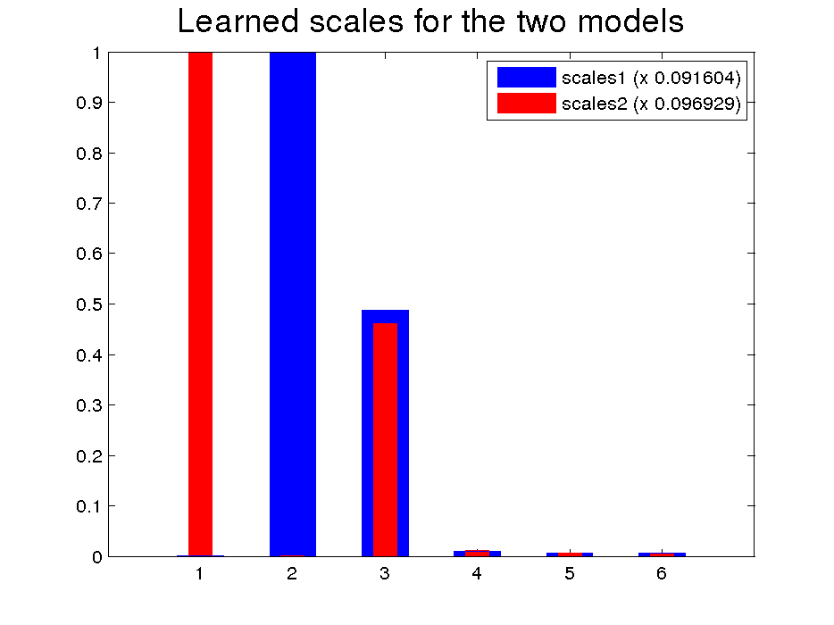 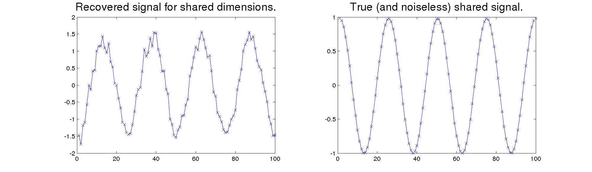 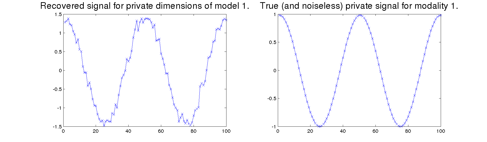

Toy data with a dynamical prior for the latent space
This example is the same as above but the latent space is constrained to be smooth with a temporal prior.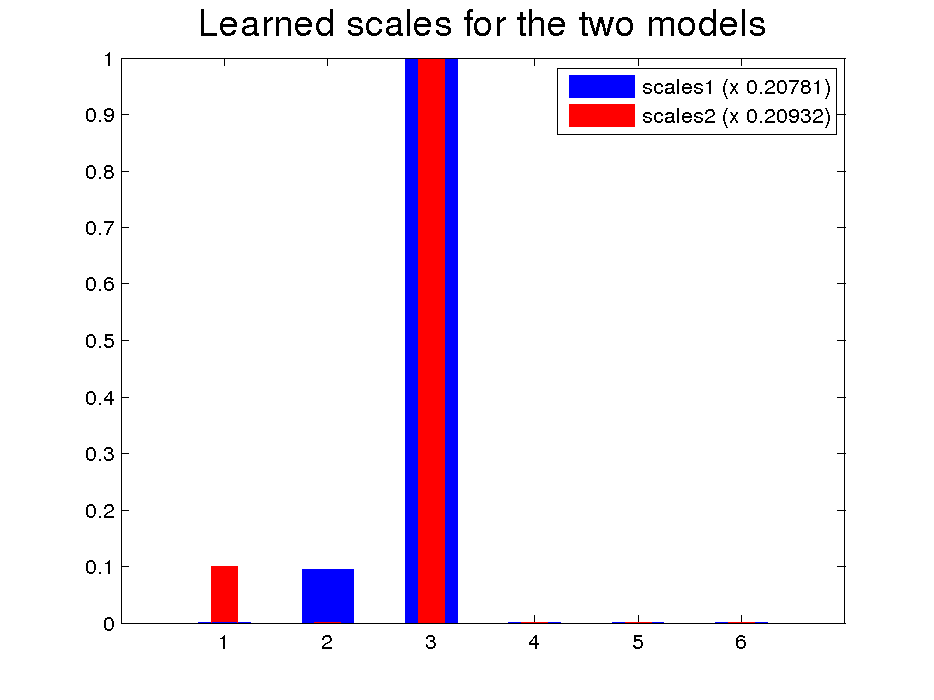 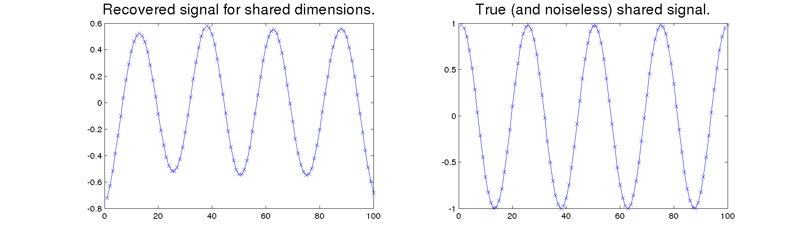
 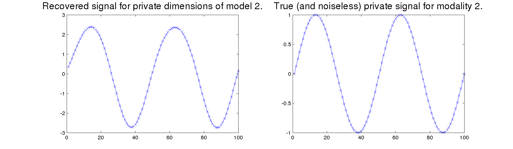
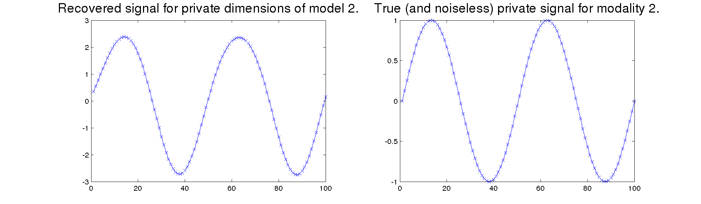
Yale faces data
The Yale dataset contains images of several human faces under different poses and 64 illumination conditions. We considered a single pose for each subject such that the only variations are the location of the light source and the subject's appearance. Since the model is capable of working with very high-dimensional data, it can be directly applied to the raw pixel values.
From the full Yale database, we constructed a dataset Y
containing the pictures corresponding to all 64 different illumination conditions for each one of 3
subjects and
similarly for Z, for 3 different subjects.
In this way, we formed two datasets, Y and Z,
each consisting of all 64 times 3 images corresponding to a set of
three different faces, under all possible illumination conditions.
We then aligned the order of the images in each dataset, so that each
image y from the first one was randomly set to correspond to one of
the 3 possible images z of the second dataset which are depicted in the same
illumination condition as y.
In that way, we matched datapoints between the two datasets only according to the
illumination condition and not the identity of the faces, so that
the model is not explicitly forced to learn the correspondence between face characteristics.
The optimized relevance weights are visualized as bar graphs below:
Figure: The relevance weights for the faces data. Despite allowing for soft sharing, the first 3 dimensions are switched on with approximately the same weight for both views of the data. Most of the remaining dimensions are used to explain private variance.
The two data views allocated approximately equal weights to the shared latent dimensions, which are visualized below, along with the private latent space of the first modality:
Figure:Projection of the shared latent space into dimensions {1,2} and {1,3} (left and middle figures) and projection of the
Y-private dimensions {5,14}
(figure on the right).
It is clear how the latent points in the third figure
form three clusters, each responsible for modelling one of the three faces in the first modality.
The demo then samples from the discovered latent spaces plotted above and then maps back to the observed data spaces. By sampling in between the training latent points (red crosses) we are able to interpolate between latent positions and, therefore, generate novel outputs. In other words, when we sample from the shared latent subspace we generate outputs of interpolated, novel lighting directions and when we sample from the private subspace we generate outputs of interpolated faces (morphing effect). This is demonstrated in the figures below, which are also generated with the demo.
 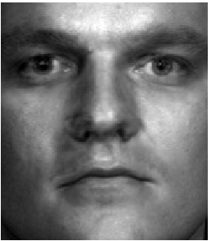
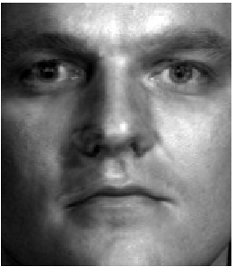
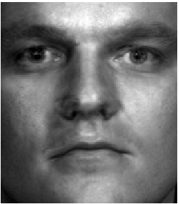
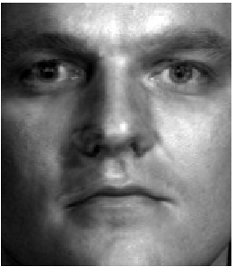
 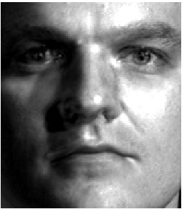
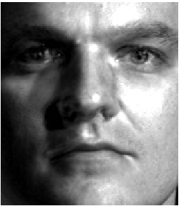
 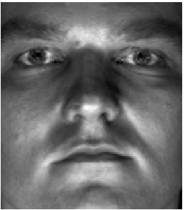
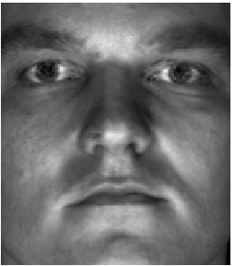
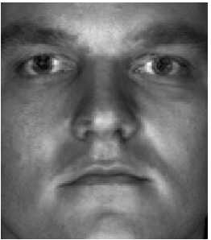
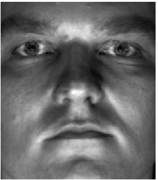
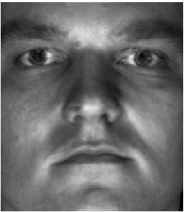
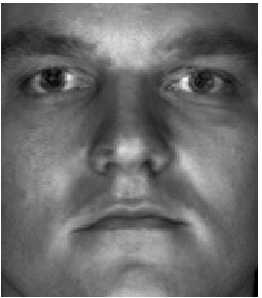
 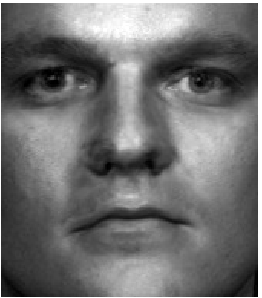
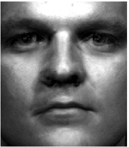
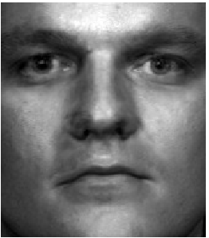
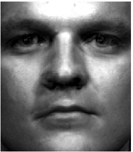
 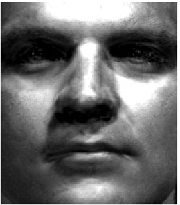
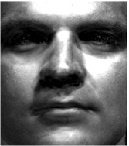
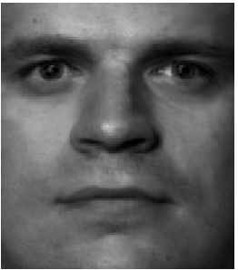


 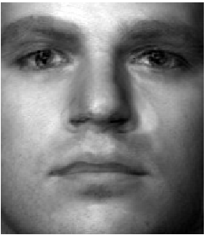
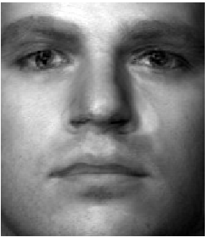

Figure: Sampling inputs to produce novel outputs. First row shows interpolation between positions of the light source in the
x coordinate
and second row in the y coordinate (elevation). Last row shows interpolation between
face characteristics to produce a morphing effect.
These images are presented scaled here, the original ones are in 32,256 dimensions.
Finally, the demo confirms the efficient segmentation of the latent space into private and shared parts by automatically recovering all the illumination similarities found in the training set. More specifically, given a datapoint
y from the first dataset, it
searches the whole space of training inputs X to find the 6 Nearest
Neigbours to the latent representation x of y, based
only on the shared dimensions.
From these latent points, we can then obtain points in the output
space of the second dataset. As
can be seen in the figure below, the model returns
images with matching illumination condition. Moreover, the fact
that, typically, the first neighbours of each given point correspond
to outputs belonging to different faces, indicates that the shared
latent space is "pure", and is not polluted by information that
encodes the face appearance.
Figure: Given the images of the first column, the model searches only in the shared latent space to find the pictures of the opposite dataset which have the same illumination condition. The images found, are sorted in columns 2 - 7 by relevance.
Video description of MRD and video examples